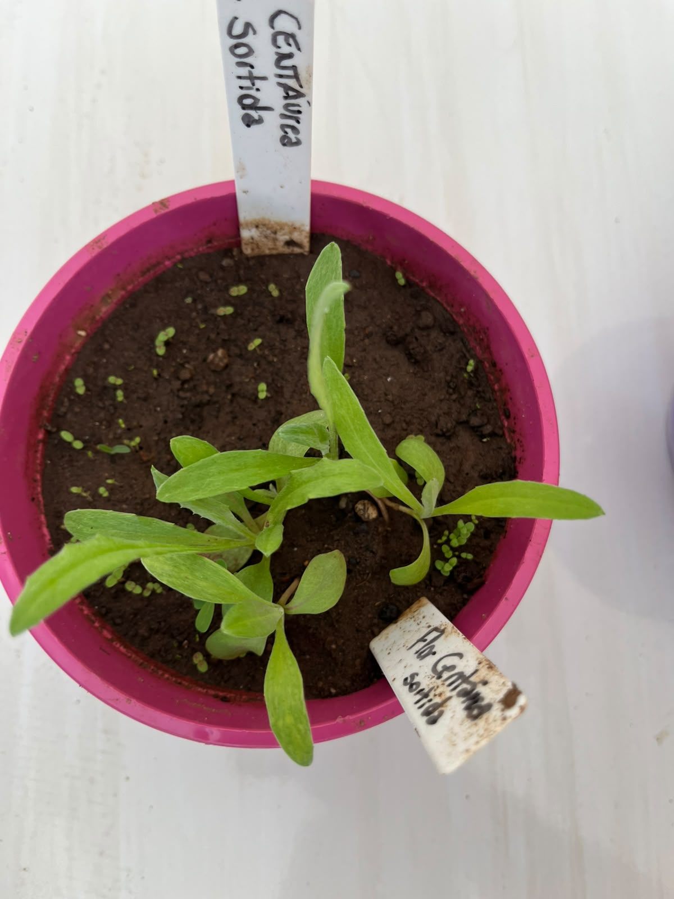

🌸 Identificação da Planta
Nome científico: Centaurea cyanus
Família botânica: Asteraceae
Origem: Europa
Tipo de planta: Ornamental
Vaso na Horta Escolar Viva: 🌈 Colorido
🌿 Características
A Centáurea Sortida é uma planta ornamental conhecida por suas flores delicadas e variadas cores, que deixam jardins e espaços educativos mais alegres.
É uma espécie apreciada por sua beleza e por ser uma ótima opção para jardins com diversidade de flores.
☀️ Como Cultivar
- ☀️ Prefere locais com boa iluminação.
- 💧 Necessita de regas moderadas.
- 🌱 Gosta de solo fértil e bem drenado.
- 🌿 Pode ser cultivada em vasos e canteiros.
🐝 Importância para a Biodiversidade
Suas flores podem atrair abelhas e outros polinizadores, contribuindo para um ambiente mais equilibrado e rico em vida.
Na Horta Escolar Viva, representa a importância da diversidade das flores e da preservação da natureza.
🌼 Você Sabia?
A Centáurea é uma flor muito apreciada em jardins por suas cores variadas e pela capacidade de atrair polinizadores.
📱 Conheça mais sobre a Centáurea Sortida
Aponte a câmera do celular para o QR Code e descubra mais informações sobre esta flor.